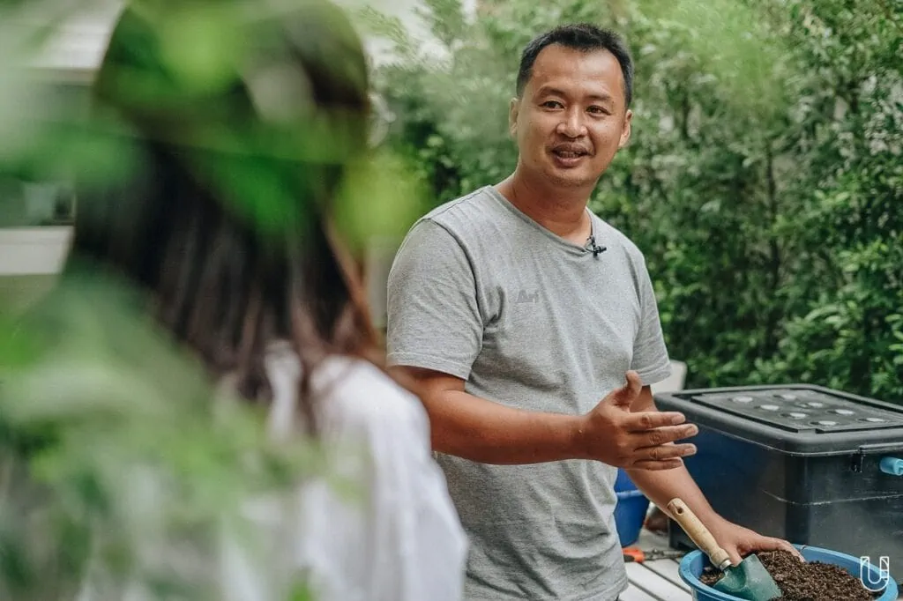
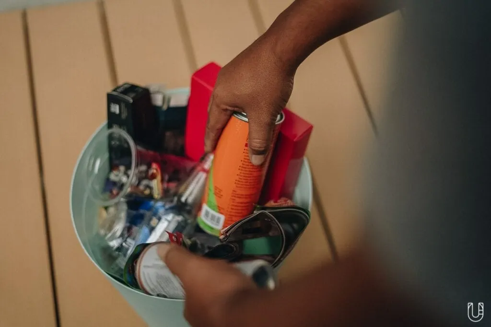
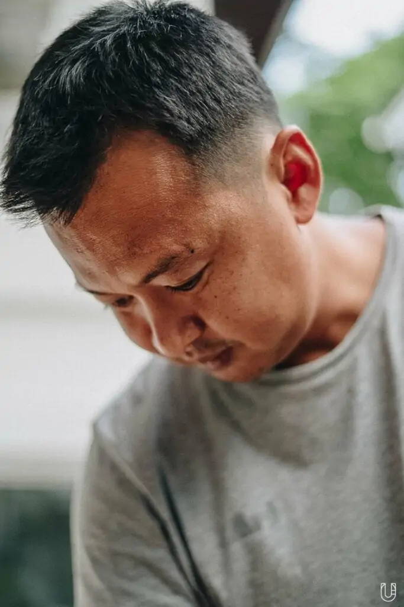
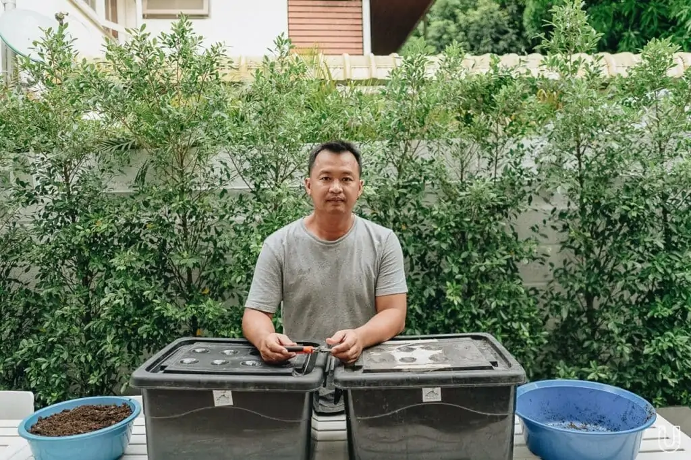
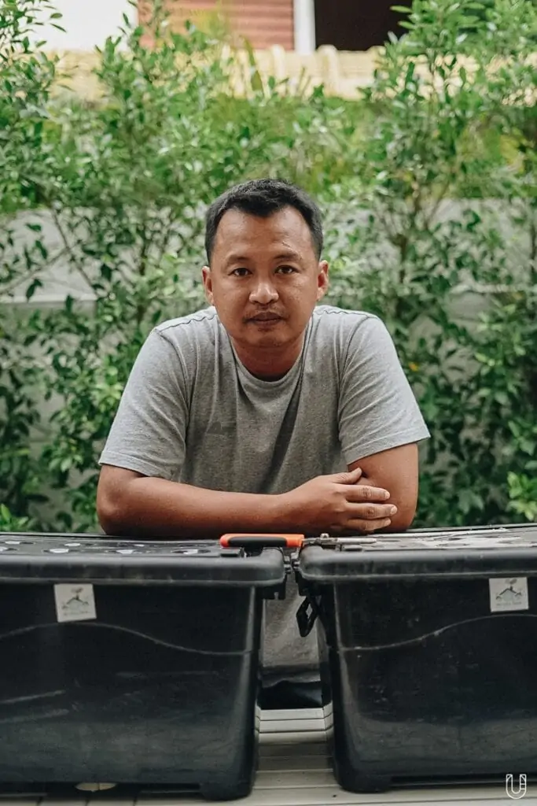

กว่า 64% ของขยะมูลฝอย คือ ขยะอาหาร (Food Waste) ที่เกิดจากการกินทิ้งกินขว้าง หรือมาจากผู้ประกอบการ ร้านอาหาร ไปจนถึงตลาดสดที่ต้องเคลียร์ของให้สดใหม่ ของเหลือเหล่านั้นจึงกลายเป็นขยะอาหารจำนวนมากมาย ที่มองดูแล้วไร้ค่า แต่ ‘ชูเกียรติ โกแมน’ หนึ่งในทีมงานสวนผักคนเมืองไม่เชื่ออย่างนั้น เขาหยิบความรู้จากการเรียนด้านเทคโนโลยีชีวภาพ ผสมผสานกับประสบการณ์ทำงานเป็นที่ปรึกษาการจัดการขยะระดับอุตสาหกรรม มาจัดการกับขยะอาหารในครัวเรือน แล้วเปลี่ยนสู่ปุ๋ยหมักธรรมชาติ
เราชวนชูเกียรติมาร่วมพูดคุยถึงการจัดการขยะอาหาร ขั้นตอนการทำปุ๋ยหมักที่ทุกบ้านทำได้ ความสำคัญของการแยกขยะ ตลอดจนช่วยไขความกระจ่างว่า ทำไมประเทศไทยถึงยังก้าวสู่สังคม Zero Waste ไม่ได้เสียที
ถังที่ 1 เห็นขยะ

ไม่ได้เพิ่งจะมาเริ่มทำงานด้านขยะ แต่ชูเกียรติอยู่ร่วมกับของเสียมานานกว่านั้น ตั้งแต่ตอนเรียน ก้าวแรกของการทำงาน ไปจนถึงหลังตัดสินใจลาออกมาเป็นคุณพ่อเตรียมเลี้ยงลูก
“สิบสามปีก่อน ผมตัดสินใจลาออกจากการทำงานเป็นที่ปรึกษาการจัดการขยะระดับอุตสาหกรรม เพราะภรรยาตั้งท้อง ผมกลับมาบ้าน เริ่มปลูกต้นไม้ ปลูกผัก เพราะลูกต้องใช้ ต้องกิน เลยปลูกโดยไม่ใช้สารเคมี ประกอบกับเราเห็นขยะ แล้วรู้สึกว่าต้องจัดการขยะในบ้านเราได้แล้ว เลยใช้ความรู้ด้านไบโอเทคที่เรียนมา ลองเปลี่ยนขยะอาหารในบ้านเป็นปุ๋ยหมัก แต่ทุกอย่างมันต้องเริ่มจากแยกขยะนะครับ”
ถังที่ 2 แยกขยะ

ชูเกียรติย้ำกับเรา สิ่งแรกที่อยากให้ทุกคนเปลี่ยนความเชื่อ คือให้เลิกคิดว่าหลังเก็บขยะไปแล้ว พนักงานเขาไม่แยกขยะ เพราะในความจริงระบบใหญ่มีการแยกขยะ เพียงแต่ไม่ได้ทำที่จุดเก็บ ไปคัดแยกที่จุดพักขยะแทน เพราะฉะนั้นการคัดแยกที่ครัวเรือน จะทำให้การแยกขยะมีประสิทธิภาพมากขึ้น และเขายังพยายามสื่อสารทุกครั้งที่มีโอกาสว่า จากปัญหาขยะมากมายที่ได้เห็น มีคำอยู่สองคำที่คนส่วนใหญ่ไม่ค่อยรู้ คือ ขยะในระบบ และ ขยะนอกระบบ
“ขยะในระบบ คือขยะที่เราคุยกันเชิงตัวเลข เช่น วันนี้กรุงเทพฯ จัดการขยะได้วันละสิบล้านกิโลกรัม เป็นเศษอาหารหกสิบเปอร์เซ็นต์ หมายความว่า มันถูกจัดเก็บ เลยรู้ว่ามีปริมาณเท่าไหร่ และเมื่อถูกจัดเก็บ จะถูกจัดการ คือเอาไปฝังกลบ เพราะฉะนั้นขยะพวกนี้ไม่ได้ส่งผลกระทบมากต่อสิ่งแวดล้อม เป็นขยะนอกระบบที่ไม่ได้ถูกจัดการมากกว่าที่ส่งผลกระทบต่อสิ่งแวดล้อม แต่เวลาเราขึ้นเสวนา คนจะขึ้นด้วยสถิติขยะต่างๆ ว่ามีเยอะจนทำให้เต่าตาย จริงๆ แล้วมันคือข้อมูลคนละชุดกัน เลยเปรียบเทียบไม่ได้ การจัดการปัญหาที่เป็นอยู่เลยบิดเบี้ยว ผมเลยคิดว่า ต้องทำให้ขยะนอกระบบกลับเข้ามาอยู่ในระบบ จะได้ถูกจัดการ ซึ่งการเริ่มต้นมันง่ายๆ มาก คือการแยกขยะ
ถังที่ 3 ขยะอาหาร

“ถ้าเรามานั่งคุยกันเรื่อง การแยกขยะกัน คุณรู้ไหมว่าขยะอะไรที่ไม่น่ามองมากที่สุด” เขาโยนคำถามปลายเปิดให้เราแวะคิด ก่อนเริ่มเฉลยคำตอบของคำถามที่ไม่เคยนึกถึงมาก่อน
“ขยะที่มีปัญหามากที่สุดคือ ขยะอาหาร ครับ หนึ่งคือมันไม่น่ามอง มันน่ารังเกียจด้วยซ้ำไป คนส่วนใหญ่ไม่อยากจัดการ สองมันเป็นตัวที่ทำให้ขยะอื่นเสื่อมมูลค่า เพราะถ้าเราแยกขยะเศษอาหารออกไปแล้ว ขยะอื่นๆ จะมีมูลค่ามากขึ้น เช่น พลาสติกถ้าเลอะแกงส้ม จะเข้าสู่กระบวนการรีไซเคิลก็ต้องล้างก่อน นั่นหมายถึงการเพิ่มต้นทุน แล้วตัวขยะอาหารจริงๆ มีมูลค่าอยู่นะ เช่น เอาไปทำไบโอแก๊สสำหรับต้มน้ำ หรือผลิตไฟฟ้า แต่ยังไม่มีใครลงทุนกับระบบแบบนี้ เพราะสิ่งที่เราพูดทั้งหมดมันจะไม่เกิดขึ้นเลยถ้าคุณไม่แยกขยะ”
ถังที่ 4 ปุ๋ยหมักจากเศษอาหาร

เกริ่นมาตั้งแต่ชื่อเรื่องว่า ชูเกียรติคือคนที่เปลี่ยนเศษอาหารเป็นปุ๋ยหมักด้วยวิธีธรรมชาติ เราจึงถามถึงรายละเอียด และวิธีการของปุ๋ยหมักที่ทำตามได้ทุกบ้าน เพื่อมาถ่ายทอดให้คุณที่กำลังอ่านอยู่ได้นำไปทำตามหลังจากแยกขยะแล้ว
“ผมเริ่มจากการตั้งโจทย์ว่า เมื่อก่อนเราออกแบบระบบการจัดการน้ำเสียวันละห้าพันลูกบาศก์เมตรในโรงงานอุตสาหกรรมได้ ทำไมขยะในบ้านวันละหนึ่งกิโลกรัมเราจะจัดการไม่ได้ แล้วด้วยความที่เรียนไบโอเทคมา เลยได้เรียนจุลชีววิทยาทุกตัว ไม่ว่าจะจุลชีววิทยาอาหาร จุลอุตสาหกรรม จุลเกษตรก็เรียน ไปจนถึงกระบวนการการเปลี่ยนแปลงทางชีววัตถุ เพราะฉะนั้นเลยนำสิ่งที่มีติดตัวทั้งหมด มาทดลองทำปุ๋ยหมัก
ถังที่ 5 ตระหนักรู้

ชูเกียรติเสริมต่อว่า อีกหนึ่งเรื่องที่ประเทศไทยไม่ได้สร้างจิตสำนึกให้เด็กตระหนักรู้ว่า ขยะเป็นของคนที่ทำให้เกิดขยะ ดังนั้นทุกคนต้องรับผิดชอบขยะของตัวเอง ไม่ใช่ให้นายกฯ มาบอกว่า ต้องเพิ่มบทเรียนเข้าไปในหลักสูตร ให้เด็กเอาขยะกลับบ้าน แต่ทุกคนต้องช่วยกันทำ โดยเฉพาะผู้ใหญ่ ต้องเป็นตัวอย่างให้เด็กเห็นว่า คุณต้องแยกขยะ ต้องรู้ว่าแยกขยะแล้วไปไหน ทำให้จริงจัง ไม่ใช่ฉาบฉวย แล้วเด็กจะเรียนรู้จากผู้ใหญ่เอง
“ปัญหาสิ่งแวดล้อมอยู่ใกล้กับทุกคนมากนะครับ เพียงแค่ไม่มีคนฉายภาพให้เห็นชัดว่าใกล้ตัวเราแค่ไหน แล้วถ้าขยะจัดการได้ จะเกิดประโยชน์อย่างไร เพราะฉะนั้นผมถึงอยากให้ทุกคนเริ่มแยกขยะ นี่คือสิ่งที่สำคัญและง่ายที่สุดแล้วครับ”
การพูดคุยกับพี่ชูเกียรติครั้งนี้ ทำให้เราได้หยุดคิด และเหมือนนั่งส่องกระจกมองตัวเอง ว่าทุกวันที่เราใช้ชีวิต สะพายถุงผ้า พกขวดน้ำ หรือเตรียมกล่องข้าวไว้ใส่อาหาร แต่เราลืมคิดถึงสิ่งที่สำคัญกว่านั้นอย่างการแยกขยะไปหรือเปล่า ซึ่งถ้าทำได้ มันคงเปลี่ยนสิ่งแวดล้อมของโลกทั้งใบให้ดีกว่าเดิมได้อีกหลายเท่าตัว ทุกคนว่าไหม